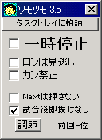
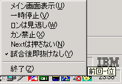
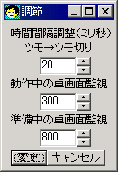

東風のプログラマ知り合いである、紅孔雀さんと共同開発したフリーソフト（無料）です。
各々の作業はちょうど半々くらいです。最初のうちはお互いが自発的に頑張ってましたが、後になるとコーディングの押し付け合いが目立ちました（謎）。
東風荘において、リーチをした時にこのソフトは動作します。
当たり牌が出た場合自動的にロン・ツモ（カン）をしてくれ、また当たり牌でない牌をツモった場合ツモ切りをしてくれるソフトです。
つまり、リーチした局については、ほっておけば自動的に打ってくれるわけです。
ついでに、起動している間は「F3 次へ進む」や「F4 終了」なども自動で押してくれますので、早い展開でゲームを進めることができます。
ただし、基本的に厳密なフリテンチェックを行っていないため、フリテンリーチの場合はフリテンロン（チョンボ）してしまいます。フリテンでは「ロンは見逃し」を使います。
一応、ツモツモ君が動作中になった段階で、自分の捨て牌に当たり牌がある場合だけ、自動的に「ロン禁止」にチェックを入れてくれます（v1.4以降）。
また、東風荘の画面の情報を読み取って動作するため、東風荘の画面が他のウインドウで隠れていたり、画面の端から切れ出ていたりすると正しく動作しません。
リーチをかけたからと安心して東風ウインドウを後ろに追いやってネットサーフィンなどをしていると、上がりを逃すことになるので注意してください！
また、仲間内で打つ場合、試合終了と同時に即卓を抜けると失礼な場合もあるので、そのような時は「試合後即抜けなし」にチェックを入れておきましょう。
試合終了後即抜け設定にして動作速度を上げておくと、伝説的な速度で即抜けできるので、「即抜けの龍」などと恐れられるかもしれません・・・。
もちろん、とつげき東北・紅孔雀さんとも、実際に超ランでツモツモ君を使って打っています。他家で、使っている人も時々みかけます。
一度使い始めると、たいへん便利なので、もう二度と手放せませんよ（笑）。
基本的にツモツモ君は安全志向の仕様になっていますので、万一変な動作をしても、動作が停止するだけで、和了を逃すようなことはまずないと思います。
基本的には、起動しておくだけです。東風荘の起動前に起動しておいてもよいし、リーチをかけた後に起動してもかまいません。
実行のためには、ツモツモ君と同じフォルダに、とつげき東北作の東風荘画面入出力ライブラリ「MJexeIO.dll」が存在しなければいけません。
v2.3以降では、MJexeIO.dllもセットでダウンロードされるため、特に意識する必要はありません。
（なお、MJexeIO.dllを用いることで、ツモツモ君のような複雑な動作をするソフトを「簡単に？」作ることができます。サンプルコードも用意しています。プログラマの方はぜひ使ってみてください）

起動すると、このような画面が出ます。
自分が対戦時にリーチをかけている場合、自動的にツモ切り・和了をしてくれます。それ以外には特に動作しません。
「一時停止」にチェックしている間は、自動和了・ツモ切り動作を停止します。
「ロンは見逃し」にチェックしている間は、ツモ和了動作とツモ切り動作だけを行います。フリテンリーチの時などに便利です。
「カン禁止」にチェックしている間は、カンできる場合でもカンしません。
「タスクトレイに格納」ボタンを押すと、ツモツモ君は現在の各種設定のまま、タスクトレイ上で動作します。
「Nextは押さない」にチェックしている間は、局終了時に自動的に「次へ進む」ボタンを押しません。
「試合後即抜けなし」にチェックしている間は、試合が終了しても、自動的に待合室に戻らないようになります。友達とワイワイやる場合などにはチェックします。
右下にある「前回-位」の部分には、ツモツモ君を使った状態で試合終了した（終了ボタンをツモツモ君が押した）最新の試合結果の順位が表示されます。
高速な即抜け設定にしていても、これを見れば順位がわかります（ただし読み取り失敗などの場合は「前回-位」の表記のままです）。

このように、タスクトレイに入っている状態では、右クリックで各種設定を行えます。
左クリックすると、通常どおりデスクトップ上に戻ります。またアイコンにマウスカーソルを置いてしばらくたつと、「前回-位」が表示されます。

こちらは実行時間間隔の微調整のためのウインドウです（v3.2以降）。
・ツモ→ツモ切り
ツモってから次の動作をするまでの時間です。
この値を小さくすればするほど、「素早い和了/ツモ切り」動作をします。
ただし、動作速度が速すぎてカンしてくれない人は、ここの値を長く（大きく）すると良いでしょう。
・動作中の卓画面監視
リーチしている時の、ツモツモ君の全体的な実行間隔を決めます。
小さければ小さいほど、素早く動作します。
環境やCPUによっては、ゆっくり動作させないと不安定になってしまう場合があり、そういう人はここの値を大きくしましょう。
・準備中の卓画面監視
局が終了した場合や、リーチしていない場合などの、ツモツモ君の全体的な実行間隔を決めます。
即抜けを素早くしたい人は、この値を小さくします。
ちなみにここの値を最低値にすると、手動では不可能な、圧倒的な即抜け速度を体感できます。
とつげき東北は、上から順に 0 50 50でプレイしていますが、何の問題もなく動作しており快適です。
ただし、CPUが古いなど、環境によっては速い動作が不可能な場合もあり、無理させるとフリーズ等の原因となる可能性もありますのでご注意ください。
厳密なフリテンチェックはしていません。和了したくない場合は「ロンは見逃し」チェックしておくか、このソフトを終了してください。
一応、ツモツモ君が動作中になった段階で、自分の捨て牌に当たり牌がある場合だけ、自動的に「ロン禁止」にチェックを入れてくれます（v1.4以降）。
このソフトは、東風荘の画面から情報を読み取りながら動作します。
したがって、東風荘の画面がウインドウなどで隠れてしまうと、動作しません！ 自動和了に任せて、ウインドウを広げてネットサーフィンなどはできません。
リーチ後に牌をツモった時、ツモ和了できる場合ツモ和了します。ツモ和了できず、カンできる場合はカンします。ツモ和了できず、カンできない場合は、ツモった牌を切ります。
万一、ツモツモ君が怪しい動作をした（テンパイなのにもかかわらず、顔が青ざめてノーテンと判断されているなど）場合は、「一時停止」にチェックして、その局は手動で打った方が安全です。
「変な動作しました」「ロン牌が出たのにロンしなかった」「フリテンロンしました」
リーチ後に東風のウインドウを動かしたり、他のウインドウを上にかぶせたりすると、手牌の読み込みに失敗したりして、誤作動する恐れがあります。
とつげき東北、紅孔雀さんともにツモツモ君は超ランで実際に使っていますが、のべ3000試合以上の間、普通に使っている限り誤作動したことはありません。
なるべく、ウインドウをいじったりしないでおとなしく使うようにしてください(笑)。
「チェック状態を記憶してほしい」
「ウィンドウの位置を記憶してほしい」
「タスクのポップアップで各種設定の変更をできるようにしてほしい」
「局終了時にロン禁止を自動解除してほしい・・・ミスってハネマン逃した」
「フリテン時にラグがバレないように高速でロン解除してほしい」
かなり高速に解除ボタン連打してますが、東風の仕様上、「ばれる程度のラグがかかる」ことはやむをえません。対処できません。
「他のウインドウが重なったりしても正常に動作するようにしてほしい」
残念ながらWindowsの構造上、無理です。
重なっても大丈夫なように、東風のプログラムがWM_PAINTに対して専用の処理をしていれば別ですが、東風はそのような処理を行っていません。
したがって対処できません。
「ツモ禁止設定もほしい」
あまり使わない機能・そんなに便利でない機能のために、チェックボックスを増やしてゴチャゴチャとさせないようにしようと思います。
現段階ではこの機能の要望は少なく、導入する予定はありません。
「トイレ時自動ツモ切り機能がほしい」
リーチをかけた瞬間「Nextを押さない」にして素早くトイレにいきましょう（笑）。
リーチ時以外に動作させる予定は今のところありません。
「カンできるときに、毎回、カンするかどうか選択できるようにしてほしい」
リーチ後はほっておけば良いソフト、という方針なので、毎回カン選択させるのはどうかと思います（それならロンするかどうかも選択するようにしないと・・・あまりツモツモ君の意味ないですね）。
ついでに、高速ツモ切りをしているプレイヤーが急に遅くなったら、「カン選択があったのか・・・ピンフではないな」などと他家に無駄に情報を与えてしまいます（笑）。
そういう手の時は「一時停止」などを押しておいて、ツモツモ君を利用せずに手動でやるか、カンするしないを決めてしまってリーチしましょう。
「カンしないことがある、直してほしい」
v3.0を含む以前のバージョンでは、しばしば「カンされない」場合があったようです。
「カンボタンが出ているかどうか」の確認をしてから、「カンボタンが出ていないのでツモ切りしよう」と判断するまでの間に比較的長い時間（CPUから見ればですが）があり、不幸にもその間にカンボタンが表示されてしまうと、それが認識されずにツモ切りを行ってしまうことが原因でした。
v3.1では、「ツモ切り」の動作を行う直前に、「ボタンが出ていないか？」を、もう一度チェックするようにしました。そして「ボタンが出ていない」ことが明確にわかった場合にだけ、ツモ切り動作を行うようにしました。
これによって「カンし忘れ」の現象はかなり起こりにくくなります。ただし、原理的に解決したわけではありません。
「カンボタンが出ているかどうかの確認をする」ことと、「ツモ切りを行う」ことは時間的に必ず別物でして、この微妙な間にちょうどカンボタンが表示されるとどうしようもありません。
ツモった牌がカン可能な牌であるかどうかを、手牌から判断することも可能なのですが、ツモ牌判別をいちいちしていると動作が遅くなってしまいます。
チェックが厳しくなった分、「カンし忘れ」現象の発生確率は相当下がったと思いますので（CPUの実行タイミング的には1/100以下くらいには下がったと思います）、様子見します。
v3.1以降で「カンし忘れ」の報告があるようでしたら、対処します。
v3.2では、ツモった後にしばらく「カンボタンが出るかどうか」の待ち時間を設定できるようになりました。カンに誤動作がある場合は、ツモ→ツモ切りの時間間隔を多めにとってみてください。
「食い仕掛けのテンパイ時も動作してほしい」
もしこの機能がつくと、突然他家リーチが来て、降りよう（あるいは、リーチ牌をポンして出やすい待ちにしよう）という場合に操作を切り替えなければなりません。
さらに、食い仕掛けをしている他家が急に高速ツモ切りし始めたとき、テンパイがばれてしまいます。
それらの動作に関してチェックボックスを増やして行くのは、ツモツモ君の方向と違いますし、何のための「自動化ツール」かわかりません。
「自動化ツール」である以上、自動では対処しきれないような場合が数多く想定されるような部分へ機能拡張する予定はありません。
したがって、原則として「リーチ」の時だけに動作するようにしたいと考えています。
より多い機能を搭載したソフトにするなら、ツモツモ君とは別物として作ると思います。
ただし、「強制動作」のような形で、ユーザが明示的に指定している間だけはリーチしてようとしていまいと動作するようにすることは考えられます。
「チャ助くらい多機能にして欲しい」
ツモツモ君は、たくさんの機能を満載したツールにならないと思います（現段階での予定）。
なるべく、他のアプリとかぶらないような機能に絞ってバージョンアップします。
チャ助や、春風など、多機能東風支援ツールは充実している上、今さらおれが似たようなソフトを作っても、それらの機能よりはるかに良い性能にはならないでしょう。
それに、現段階でのそれらと同じ機能をつけるためにも時間がかかります。
あまり有益な作業とは思えず、素直にチャ助や春風を使う方が良いように思います。
他のアプリにない、斬新で便利な機能のアイデアが出たら、作るかもしれません（笑）。
ツモツモ君♪の方針：
シンプルに：あまり使わない・そんなに便利ではない機能のために、チェックボックスをたくさんにしてゴチャゴチャさせたくありません。
使いやすく：操作ミスなどによって失敗しにくい仕様をめざします。
わかりやすく：「東風でのルーチンワークの自動化」を目的とします。手動での選択が必要になる可能性が高い場合に、ツモツモ君が動作しないようにします。
回線落ち復帰後に、動作させたままにしていて、フリテンロンしてしまうといった問題があります。
ユーザが意識しなくても「危ないこと」はしないような安定性を目指してバージョンアップしていく予定です。
必ず、利用規約をお読みください。
また同時に、MJexeIO.dllの利用規約もお読みください。
両方の利用規約に同意した人だけがこのソフトを使用できます。ただし、共同開発者である紅孔雀さんも、とつげき東北と全く同等の権利を持ちます。
もしこのソフトの誤作動やバグ等によって、利用者が損害をこうむったとしても、とつげき東北ならびに共同開発者である紅孔雀さんはその責任を負いません。
重要な不具合が確認されていて、使えないバージョンは赤字になっています。
v1.0 初公開版。
v1.1 カンに対応版。
v1.2 カン禁止ボタン搭載。リーチ後アンカン時の動作確認済。
v1.3 タスクトレイに収納できるようにした。
v1.4 簡易フリテンチェックを導入。
v1.5 簡易フリテンチェックを第三（赤牌入り）に対応。
v1.6 観戦時は「動作中」にならないようにした。
v1.7 局終了時「Next」自動押し、試合終了時即抜け機能がついた。
v1.8 「Next」「終了」に対して、「一時停止」が優先されなかったので、優先されるようにした。
v1.9 局の切り替わりが早すぎた場合（回線が遅くて急に画面が切り替わるなど）に、次局の第一打でツモ切り動作することがある不具合を修正。
v2.0 起動時のデフォルトを「即抜けしない」に変更。動作時の「リーチしているかどうか」チェックを高速化して安定にした。
v2.1 安定性を向上。
v2.2 動作の状態をアイコンのアニメーションで表示するようにした。
v2.3 MJexeIO.dllをバンドルした。
v2.4 顔アニメの種類を増やした。
v2.5 ノーテンリーチ時、動作開始になるのが遅れていたのを修正。
v2.6 不安定動作の改善。顔アニメの種類を増やした。アイコンのポップアップで各種チェックを可能にした。
v2.7 チェック項目・ウインドウの位置が保存されるようになった。
v2.8 局終了時に「ロン禁止」「カン禁止」を自動的に解除するようにした。
v2.9 Nextボタンを押さないことがあったので対処。
v3.0 動作を安定させた。ロン・ツモ切り等の速度の高速化を行った。タスクトレイに格納された状態を保存するようにした。
v3.1 時々カンしない場合があったので対応した。
v3.2 安定性向上、ツモ切り動作のタイミングなどを可変とした。
v3.3 微調整と安定性の向上。
v3.4 誤作動によって観戦中に卓を抜けるバグに対処。
v3.5 試合後、試合結果の順位を表示するようにした。
v3.6 観戦中に、誤認によって待合に出てしまうバグを修正した。
v3.7 DLLのバージョンアップに伴う安定性の向上。
Borland C++ Builder Pro 5.0